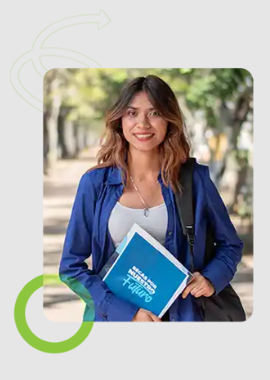
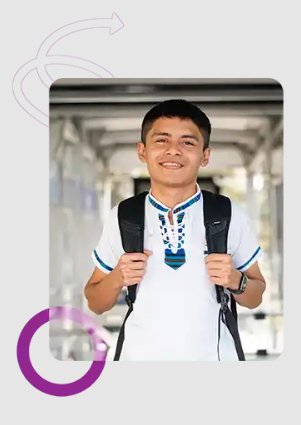

Este programa nace del Fondo Nacional de Becas creado el 11 de marzo de 2025 como una de las prioridades nacionales del gobierno del Presidente Bernardo Arévalo que busca apoyar a estudiantes guatemaltecos para que puedan iniciar, continuar o finalizar sus estudios de educación superior o formación técnica, dentro o fuera del país.
TIPOS DE BECA
Becas de pregrado
(licenciatura y técnico universitario)
Está dirigida a guatemaltecos/as que han concluido la educación media (nivel diversificado) y desean continuar sus estudios de licenciatura o técnicos universitarios en universidades acreditadas del país. Las becas también pueden cubrir cursos propedéuticos que se necesiten antes de iniciar la carrera universitaria.

Posgrados
(maestrías y doctorados)
Está dirigida a guatemaltecas/os profesionales que han concluido sus estudios universitarios de pregrado y que buscan especializarse con un posgrado en una universidad nacional o internacional.

Cursos técnicos no universitarios
Está dirigida a guatemaltecos/as que buscan capacitarse en oficios técnicos de corta duración para insertarse rápidamente en el mercado laboral o que buscan mejorar sus condiciones laborales actuales.
Requisitos
Consulta los requisitos específicos desde el botón Ver requisitos disponible en cada tipo de beca.
Aplicar
Esta maqueta conserva el acceso de registro e inicio de sesión para simular el recorrido del postulante.